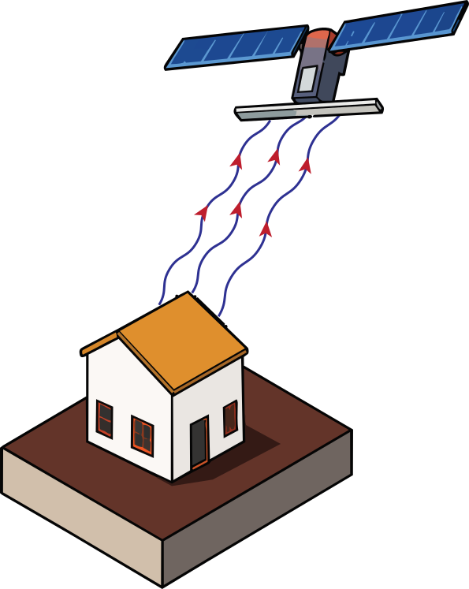
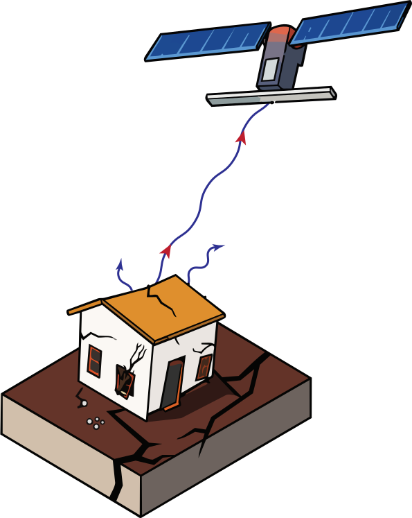

The Gaza Strip is a sliver of land about 41 km long and 6–12 km wide, roughly 365 km² in all, pressed between Israel, Egypt, and the Mediterranean. Before the war, it held about 2.2 million people, making it one of the most densely populated territories on Earth. Very little of that area is actually town: dunes, the beach, citrus and olive groves, and a wide fenced buffer along the eastern perimeter take up most of it. The built environment (the houses, streets, shops, schools, and clinics people live in) covers about 116 km², and it is packed toward the coast.
On 7 October 2023, a war began. Over the following two and a half years, a large part of that built environment was physically levelled by Israeli strikes and a bulldozing campaign. The scale of the destruction is difficult to comprehend. This work sets out to measure how much of the built-up area was destroyed, in which sectors, and in what order, read directly off the satellite images.
Why radar, and what it measures
Optical "before and after" imagery is intuitive and might be misleading. Optical sensors see cloud and darkness on many days, and what they record is surface brightness, which shifts with season, soil moisture and sun angle. Sentinel-1 radar is free and openly licensed, with a complete pre-war archive; the high-resolution optical imagery a credible before-and-after would need is commercial, and for much of this period was neither free nor available. Radar also carries a physical quantity that measures structural change directly, which surface brightness cannot.
Radar provides its own illumination and its microwaves pass straight through cloud, so overcast days and darkness are no obstacle, and Copernicus Sentinel-1 has imaged the region on a fixed 12-day repeat cycle since long before the war, which is what makes a pre-war baseline possible at all.
The specific quantity, the proxy used to measure the damage, is interferometric coherence: the correlation between two complex radar images of the same 40 m patch of ground, acquired 12 days apart. Coherence measures whether the ground scattered radar the same way twice. Intact structures do, because their geometry is fixed: the same walls, roof edges and corners reflect the pulse back the same way on every pass. When a building collapses, the arrangement of reflecting surfaces inside the cell is rearranged and cannot be recovered, so coherence falls, and it falls for a reason specific to structural change.


Destroyed ground loses about 35 % of its coherence1 at the moment of collapse, then returns close to its pre-war level within a year: rubble settles, debris stops moving, cleared ground stabilises, and the surface becomes a reproducible reflector again. The damage signal is therefore a transient, not a permanent state. A single interferogram taken in 2026 would have missed most of what happened in 2023. That is why a dense stack of roughly 107 image pairs per geometry was needed rather than one before-and-after pair, and it is a result that generalises: any coherence-based damage study built on a single pair is undercounting. (Coherence recovery is re-coherence of settled rubble and cleared ground. It is not evidence of reconstruction.)
The raw input is Sentinel-1 SLC imagery (IW mode), pulled from the Alaska Satellite Facility's archive. Two tracks are used: track 87, ascending, and track 94, descending, with the satellite passing over Gaza on opposite sides of its orbit and looking at the ground from opposite directions. Each track supplies 107 image pairs, spanning 9 January 2023 to 17 July 2026; the pre-war baseline is the 22 pairs whose second acquisition falls on or before 7 October 2023.
Interferograms come from ASF HyP3's GAMMA workflow: multilooked 10 × 2 to a 40 m ground pixel, temporal baseline held to 11–13 days, the Goldstein phase filter disabled because it saturates the coherence estimate, and no water mask. A built-up mask is derived separately from 13 Sentinel-2 scenes using a multi-date maximum-NDVI, which separates permanently non-vegetated surface from seasonally fallow farmland; that gives 115.8 km² of built-up land to assess.
Layover and shadow in dense urban terrain depend on the direction the radar looks from. Damage seen from one look direction and not the other cannot be told apart from a pure geometric artefact unless a second, independent geometry is processed. Tracks 87 and 94 were run through an identical pipeline and their results compared. They agree on 60 km² independently, with a Cohen's κ of 0.535.
Across the 115.8 km² of built-up land assessed, 61 to 65 % was recorded as destroyed: 71.1 km² on track 87, 74.8 km² on track 94, with 60.4 km² confirmed independently by both geometries. The destroyed share is low at the perimeter fence, about 22 %, and rises to a plateau of ~70–75 % from about 1.5 km inland. That is the opposite of the intuitive expectation, that damage would concentrate along the militarised eastern edge.
Figure 1The destruction map, and the gradient inland
The Strip laid along its own axis, the Egyptian border at the left. Every 40 m cell is coloured by what the two Sentinel-1 tracks agree on: dark red where both look directions independently record it as destroyed, pale red where only one does, tan where built-up ground shows no damage.
Destroyed share against distance from the perimeter fence
The destroyed share of built-up area against distance inland from the land perimeter, and, below it, where that built-up land actually sits (only about 5 % within 1 km of the fence, shaded red). The right-hand panel repeats the curve inside each third of local built-up density: a detection artefact over sparse ground would vanish there, and it does not.
Damage rises with distance from the fence
Destroyed share of built-up area against distance inland from the land perimeter. Below: where that built-up land sits, most of it 2–4 km inland, toward the coast.
The rise holds inside every density class
The curve on the left, re-tested inside each third of local built-up density. If the gradient were a detection artefact over sparse ground it would vanish here; it does not.
Part of the reason is simply where Gazans live. The population is packed against the Mediterranean coast, so the built-up land itself sits toward the sea, well away from the eastern fence: only about 5 % of the Strip's built-up area lies within 1 km of the perimeter. But the gradient is not just an exposure effect. Sparse built-up land near the fence is genuinely harder to score as destroyed (a 40 m cell with two houses among fields keeps most of its coherence), so the rise is re-tested inside each third of local built-up density. It survives in all three: it is a real pattern, not a detection artefact.
By governorate the destroyed share runs North Gaza ~74 %, Gaza ~73 %, Rafah ~66 %, Khan Younis ~58 %, Deir al-Balah ~41 %. Around civilian sites (pharmacies, schools, bakeries, hospitals, mosques, clinics, water and sanitation assets) the built-up area within 250 m of each site type that was destroyed sits between 60 % and 79 % for every class. The 100 m and the 500 m around a site come out almost the same, so the destruction is neighbourhood-scale; this is not a building-level assessment of the facilities themselves. Every one of these classes sits above the Strip-wide average of ~61 %.
Figure 2By governorate, and around civilian sites
The destroyed share broken out two ways. In both charts the bar is the mid-estimate; the thin line is the two-track range (governorate) or the middle 50 % of individual sites (civilian sites).
Destroyed share by governorate
Destroyed share of each governorate's built-up area. Bar = mid-estimate · thin line = two-track range.
Around civilian sites
Built-up area within 250 m of each site type that was destroyed. Bar = mean · thin line = middle 50 % of individual sites.
When it happened
Half of the total destroyed area had been reached by 28 January 2024, about four months in. The pace never returned to that winter-2023 peak. Because per-pixel timing does not replicate, nothing below is drawn at per-pixel time resolution: the maps show roughly when each patch fell, to within a kilometre and a 12-day window.
Figure 3The pace of destruction
Cumulative destroyed area over time, with the monthly rate below. The line is the mean of the two tracks; the shaded band is their spread.
Half the total by January 2024
Each 12-day window in turn
Each 12-day Sentinel-1 window is one frame. Red marks built-up ground that lost coherence during that window (destroyed or heavily damaged in those 12 days); it fades back to white in later frames as the rubble re-coheres.
Every 40 m patch the radar records as destroyed, coloured by when it first lost coherence: blue for October 2023, deepening to red for mid-2026. Move the slider forward to watch the damage spread across the Strip; hover any point for its onset date and how far it sits along the Strip.
Thirteen Israeli ground offensive operations were compiled from open reporting. Where a coloured destruction band sits directly below an operation bar in Figure 4, a clear correlation appears between the offensive campaign and the destruction on the ground.
Read against the bars, most operations enter sectors where the destruction bands are already well developed above them: the levelling of a sector tends to precede the ground operation there, or run alongside it, rather than follow it.
Figure 4The campaign in space and time
Every column is a one-kilometre slice of the Strip, measured along its length from the Egyptian border; every row is a 12-day radar window, October 2023 at the top. Colour is the built-up area that lost coherence (was destroyed) in that place and that window. The numbered bars are the 13 ground offensive operations.
Israeli ground operations
Who lived on the ground that was destroyed
Crossing the coherence damage map with the pre-war resident population (WorldPop 2020, constrained, UN-adjusted, 100 m, resampled to the 40 m grid and renormalised so the Strip total is preserved) turns "area destroyed" into "homes destroyed". The dense cores stand out: Gaza City and Jabalia in the north, Khan Younis and Rafah in the south.
The homes of 1.02–1.12 million people stood on ground the radar records as destroyed. That is 54–59 % of the 1.9 million WorldPop places inside the Strip in 2020; scaled forward to the mid-2023 population of about 2.2 million it is roughly 1.1–1.2 million. Because the destruction fell disproportionately on the densest ground, the population-weighted picture is worse than the area figure: 65 % of the built-up population lived somewhere now more than three-quarters destroyed, against 44 % of the built-up area. And almost nobody lived near the fence: about 29,000 people, 2 % of the built-up population, within 1 km of the perimeter.
This is the pre-war resident population of ground later destroyed, not a displacement count and not a casualty count. Most of Gaza had been displaced, often repeatedly, long before the ground they came from was hit.
Figure 5Who lived on the ground that was destroyed
The map shades each spot by how many people lived there before the war, per hectare, on ground that was later destroyed.
Along the Strip
Pre-war residents per kilometre: everyone (line) versus those who lived on ground later destroyed (bars).
By governorate
Thousands of pre-war residents of destroyed ground. Bar = mid-estimate · thin line = two-track range · label = share of that governorate's pre-war population.
Almost nobody lived near the perimeter
Pre-war residents by distance from the land perimeter: everyone (pale) and those on destroyed ground (red).
Read the results as
- Destroyed area at 40 m resolution: a 40 m pixel is 1,600 m² and holds a structure together with its surroundings. Not a building count.
- One class, "destroyed", with no distinction between total and partial damage. Not a damage grade.
- A description of the neighbourhood a civilian site stands in, reported at three radii. Not a facility-level assessment.
- The pre-war resident population of ground later destroyed. Not a displacement or casualty count.
References
- Reyes, R., and M. Nagai. "Coherence and Intensity Statistical Mapping of Earthquake Affected Areas using Sentinel-1 Images." ISPRS Annals of the Photogrammetry, Remote Sensing and Spatial Information Sciences 10 (2024): 347–354.
Data sources
Every input is from an open, citable source.
| Purpose | Source | Detail |
|---|---|---|
| Radar imagery | Copernicus Sentinel-1 SLC (IW mode), via the Alaska Satellite Facility DAAC | Tracks 87 (ascending) and 94 (descending); 107 image pairs each; acquisitions 9 Jan 2023 – 17 Jul 2026; pre-war baseline = 22 pairs ending on or before 7 Oct 2023 |
| Interferograms | ASF HyP3, on-demand, GAMMA workflow | Multilooking 10 × 2 → 40 m ground pixel; temporal baseline 11–13 days; Goldstein phase filter disabled; no water mask |
| Built-up mask | Sentinel-2 L2A (Copernicus), 13 scenes 2023–2026, via AWS Earth Search | Multi-date maximum NDVI, separating permanent non-vegetated surface from seasonal fallow farmland → 115.8 km² built-up |
| Strip & governorate outlines | geoBoundaries gbOpen, PSE ADM1 / ADM2 | Strip area 364.8 km² |
| Population | WorldPop 2020, constrained, UN-adjusted, 100 m | 1,900,522 inside the Strip; resampled to 40 m as a density and renormalised so the Strip total is preserved |
| Population total (2023) | PCBS (Palestinian Central Bureau of Statistics) mid-2023 projection | ~2.2 million in the Strip; used only to scale the 2020 counts forward |
| Civilian facilities | oPt health-facility list; HOTOSM education and points-of-interest extracts | 89 hospitals, 73 clinics, 1,241 schools, 647 places of worship, 198 water / sanitation assets, 69 bakeries, 477 pharmacies |
| Ground operations | Compiled record of 13 Israeli ground offensives from open reporting | Supplied independently of the radar processing; used only for the test in Figure 4 |
Credit and licensing
Analysis and figures: Rami Alshembari, PhD. Contains modified Copernicus Sentinel data (2023–2026). Population data © WorldPop (University of Southampton), CC BY 4.0. Facility and boundary data from OpenStreetMap contributors / HOTOSM and geoBoundaries. When reusing a figure, keep the credit line shown on it and link back to this page.